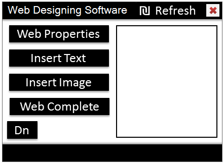
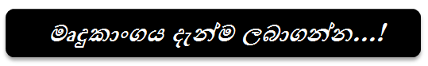

බහුමාධ්ය තාක්ෂණය සහිත වෙබ් අඩවි නිර්මාණය
බහුමාධ්ය තාක්ෂණය සහිත වෙබ් අඩවි නිර්මාණය

HTML (Hyper Text Markup Language) යොදා ගනිමින් සරළ වෙබ් අඩවියක් නිර්මාණය කරගැනීම:
වෙබ් අඩවි නිර්මාණය සඳහා මෘදුකාංගය (මාගේ ම Visual Baisc නිර්මාණයක්)


මෙම අයිතමය මත ක්ලික් කිරීමෙන් ලැබෙන වින්ඩෝවේ Save File තේරීම ලබා දී මෘදුකාංගය ඔබේ පරිගණකයේ තැම්පත් කරගන්න.